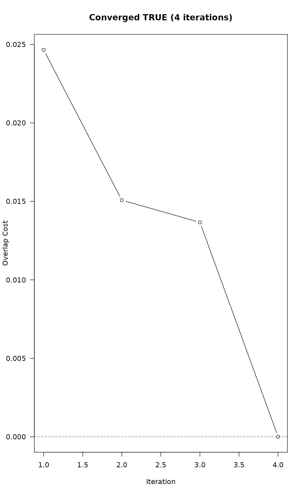

Label placement based on a simulation of electrostatic forces
Source:R/aqp-label-placement-solvers.R
electroStatics_1D.RdThis function attempts to move labels along a 1D coordinate system such that overlap (as specified by threshold) is minimized. An electrostatic simulation applies forces of repulsion between labels that are within thresh (e.g. overlapping) and forces of attraction to a uniformly spaced sequence to iteratively perturb affected labels until either no overlap is reported, or a maximum number of iterations (maxIter) has been reached.
Usage
electroStatics_1D(
x,
thresh,
q = 1,
chargeDecayRate = 0.01,
QkA_GrowthRate = 0.05,
maxIter = 100,
tiny = 1e-04,
const = 0.001,
trace = FALSE,
...
)Arguments
- x
numeric vector, pre-sorted sorted, without duplication, describing 1D label (particle) configuration
- thresh
numeric, overlap threshold, same as in
fixOverlap()- q
numeric, electrical charge (typically between 0.1 and 2)
- chargeDecayRate
numeric, exponential decay rate constant for
qas a function of iterationi- QkA_GrowthRate
numeric, growth rate constant for
Qkapplied to attraction to uniform spacing of labels, invoked when rank order is violated during the simulation- maxIter
integer, maximum number of iterations before giving up
- tiny
numeric, 0-values replaced by this number to avoid division by 0 and infinite forces
- const
numeric, empirical constant added to the 1D electrostatic force equation to dampen oscillation:
(Qk * Q1 * Q2) / (d^ex + const)- trace
logical, include diagnostic output
- ...
not used, absorbs additional arguments to
fixOverlap()
Details
Difficult overlap problems can be addressed by reducing thresh and increasing q. Large values of q can lead to chaotic results.
This function will generate unpredictable output when x contains duplicate values.
This function requires input to be pre-sorted, although interesting "artistic" simulations will often result from unsorted x.
Examples
# vector of object locations, with potential overlap
x <- c(1, 2, 3, 3.3, 3.8, 5, 6, 7, 8, 9, 10)
# full diagnostic output
z <- electroStatics_1D(x, thresh = 0.65, trace = TRUE, q = 1)
#> 4 iterations
txt <- sprintf("Converged %s (%s iterations)", z$converged, length(z$cost))
plot(
seq_along(z$cost),
z$cost,
las = 1,
xlab = 'Iteration',
ylab = 'Overlap Cost',
type = 'b',
main = txt
)
abline(h = 0, lty = 2, col = 2)

# final configuration only
xnew <- electroStatics_1D(x, thresh = 0.65, q = 1)
#> 4 iterations
# check for convergence
attr(xnew, 'converged')
#> [1] TRUE
# compare original vs. modified
data.frame(orig = x, new = round(xnew, 2))
#> orig new
#> 1 1.0 1.00
#> 2 2.0 2.00
#> 3 3.0 2.66
#> 4 3.3 3.35
#> 5 3.8 4.01
#> 6 5.0 5.00
#> 7 6.0 6.00
#> 8 7.0 7.00
#> 9 8.0 8.00
#> 10 9.0 9.00
#> 11 10.0 10.00